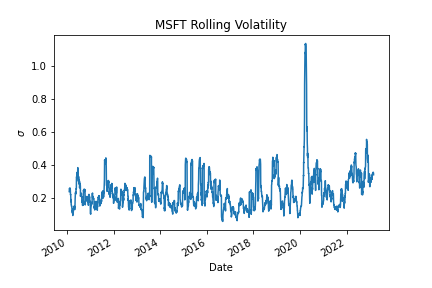
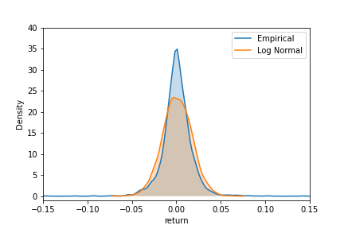
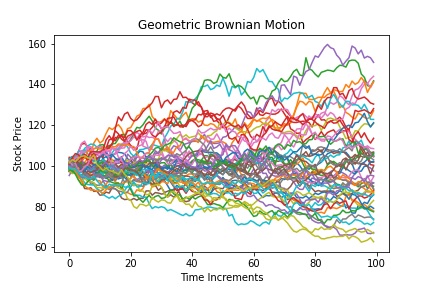

BSM Monte Carlo
An overview of the Black-Scholes European option pricing model and a solution using the Monte-Carlo stochastic modeling technique
Predicting the direction of stock prices is an enticing provocation with the promise of a life of luxury and philanthropy. Alas, such a challenge is generally considered impossible given the complex nature of the stock market. However, there exists mathematical and statistical tools that can help us make useful predictions, manage risk, and profit probabilistically. This report serves as a both a introductory glimpse of the mathematical underpinnings as well as a reference to a number of theoretical and pragmatic resources on options trading. We briefly review the Black-Scholes European option pricing model and then solve it using the Monte-Carlo stochastic modeling technique.
The Black-Scholes model is a mathematical formula used to estimate the fair price or theoretical value for a European call or put option. The model was developed by Fischer Black and Myron Scholes in 1973 in their paper The pricing of options and corporate liabilities, and later extended by Robert Merton (Black and Scholes 1973). It is widely used in finance for option pricing, and has been recognized as a significant contribution to the development of modern financial mathematics theory. Scholes and Merton would eventually earn the 1997 Nobel Prize in Economics for their contributions. Black was ineligible for the award as he died a few years prior, however he was listed as a contributor.
The Black-Scholes model provides a way to determine the fair value of an option, which can be compared to the actual market price to determine if the option is overpriced or underpriced. It uses partial differential equations to calculate the expected payoff of the option at expiration, discounted to present value using the risk-free interest rate. The model has certain limitations, such as assuming constant volatility and not accounting for factors such as dividends or early exercise, but it is still widely used in practice and has led to the development of other models that incorporate additional factors. One of these popular model developments is incorporating Monte Carlo simulations.
Monte Carlo methods are a broad class of computational modeling techniques used to simulate and analyze complex systems or processes. This method and its name were inspired by the casinos of Monaco, and its approach involves generating a large number of random samples or “trials” to make conclusions with statistical significance. This technique has become wildly popular in computational finance, and is particularly useful when an option pricing formula is difficult or impossible to derive analytically (Johnson 2010).
The remainder of this report is structured as the following; sections 2 and 3 take a deeper look into the mathematical underpinnings of the Black-Scholes and Monte Carlo methods for European option pricing. Section 4 demonstrates how to computationally put the models into production using Python, and compares the results of the two methods using simulated financial data. Lastly, we conclude and and mention a few ways this report can be extended.
Preliminaries
A call option is a financial contract between a buyer and a seller that gives the buyer the right, but not the obligation, to buy an underlying asset at a specified price, known as the , at, or before, a certain date called \(maturity \ T\) or the . The underlying asset can be a stock, currency, commodity, or any other financial instrument. The buyer purchases the option from the seller at price \(C(t)\) at time \(t<T\) (Asiri 2018).
A put option is a financial contract between a buyer and a seller that gives the buyer the right, but not the obligation, to sell an underlying asset at a specified price, known as the , at, or before, a certain date called \(maturity \ T\) or the . The underlying asset can be a stock, currency, commodity, or any other financial instrument. The buyer purchases the option from the seller at price \(P(t)\) at time \(t<T\) (Asiri 2018).
The buyer of the call/put option pays a premium to the seller for the right to buy/sell the underlying asset. For the call option, if the price of the underlying asset rises above the strike price \(K\) before the expiration date, the buyer can exercise the option and buy the asset at the lower strike price, and then sell it on the open market for a profit. Whereas, for the put option, if the price of the underlying falls below the strike price before the expiration date, the buyer can exercise the option and sell the asset at a higher strike price, and then sell it on the open market for a profit.
A call or put option of an underlying option has a market, or today, price \(S(t)\) and a future price \(S(T)\). We say a call option expires in the money when \(S(T)>K\), at the money when \(S(T)=K\), and when \(S(T)<K\). When an option expires out of the money, the buyer simply chooses not to exercise the option, and it expires worthless. For put options the lingo is similar, however the buyer is anticipating the asset price to drop, thus in the money when \(S(T)<k\), so on and so forth.
Formula
\[\begin{equation} C(S_{0},t)=S_{0}N(d_{1})-Ke^{-r(T-t)}N(d_{2}) \end{equation}\] \[\begin{equation} P(S_{0},t)=N(-d_{2})Ke^{-r(T)}-N(d_{1})S_{0}, \end{equation}\]
where
- \(S_{0}\) is the stock price;
- \(C(S_{0},t)\) is the price of a call option as a formulation of the stock price and time;
- \(P(S_{0},t)\) is the price of a put option as a formulation of the stock price and time;
- \(K\) is the strike price;
- \((T-t)\) is the time to maturity, i.e. the exercise date \(T\), less the amount of time between now \(t\) and then. Generally this is represented in years with one month equaling \(1/12\);
- \(N(d_{1})\) and \(N(d_{2})\) are the cumulative distribution functions for a standard normal distribution with the following formulation: \[\begin{equation} d_{1}=\frac{ln\frac{S_{0}}{K}+(r+\frac{\sigma ^{2}}{2})(T-t)}{\sigma\sqrt{T-t}} \end{equation}\] \[\begin{equation} d_{2}=d_{1}-\sigma\sqrt{(T-t)}, \end{equation}\]
where
- \(\sigma\) represents the underlying volatility;
- \(r\) is the risk-free interest rate
Limitations
The Black-Scholes model makes a number of assumptions, however one of the most glaring issues is that it assumes stock returns are normally distributed. This implies that the volatility of the market is constant over time. Figure 1 shows the rolling average standard deviation for Microsoft daily close price over approximately ten years. Notice that the volatility is in no way stable.

Another key limitation of the Black-Scholes model is that it underestimates the tail density. Figure 2 shows a kernel density estimation plot with the empirical versus normal distribution for the Microsoft stock. Notice there are more returns at the extremities of the distributions than the normal distribution would predict. The phenomenon is known as “fat tails” or “excessive kurtosis,” and this suggests that the model will underestimate the value of out-of-the-money options (John 2020a).

Monte Carlo Simulation
Monte Carlo simulations are a popular and widely used method for pricing European options. This approach is particularly useful when the option pricing formula is difficult or impossible to derive analytically. In the Monte Carlo method, the future price of the underlying asset is modeled using random simulations, and the option price is calculated as the discounted expected value of the option’s payoff at the option expiration time.
Economist Phelim Boyle is credited for initiating the use of Monte Carlo methods in option pricing in his paper Options: A Monte Carlo Appraoch. One advantage of Boyle’s Monte Carlo approach is that it can be easily extended to handle more complex option types, such as options with early exercise features or options with multiple underlying assets. Additionally, the Monte Carlo method can be used to estimate the sensitivities of option prices to changes in the underlying asset’s parameters, such as volatility or interest rates (Boyle 1977).
However, the Monte Carlo method can be computationally expensive, as it requires the generation of a large number of price paths to obtain an accurate estimate of the option price. Various techniques have been developed to improve the efficiency of Monte Carlo simulations, including variance reduction techniques such as control variates, antithetic variates, and importance sampling. Despite its computational complexity, the Monte Carlo simulation remains a valuable and widely used method for pricing European options.
More Preliminaries
Wiener Process, also known as Brownian motion, is a continuous stochastic process \(W(t)\) with the following properties:
- \(W(0)=0\).
- For each \(t\), the random variable \(W(t)\) is normally distributed with mean 0 and variance \(t\).
- For each \(t_{1}<t_{2}\), the normal random variable \(W(t_{2})-W(t_{1})\) is independent of the random variable \(W(t_{1})\), and independent of all \(W(s),0\le s\le t_{1}\).
- Wiener Process \(W(t)\) can be represented by continuous paths (Sauer 2006).
There are several research articles that take a deeper look into geometric Brownian motion, however, for the purpose of this topic, I found this interactive blog to be very clear and well explained . Figure 3 visualizes simulated assets paths using Geometric Brownian motion.
- Ito’s Lemma performs as the chain rule for stochastic calculus, similar to the chain rule in ordinary differential calculus. Specifically, it relates the partial differential of a function of a stochastic process to the drift rate, volatility, and their partial derivatives. The Ito formula is given below:
If \(y=f(t,x)\), then
\[\begin{equation} dy=\frac{\partial f}{\partial x}(t,x)dt+\frac{\partial f}{\partial x}(t,x)dx+\frac{1}{2}\frac{\partial ^{2}f}{\partial x^{2}}(t,x)dxdx, \end{equation}\]
where the \(dx\)\(dx\) term is interpreted by using the identities \(dt\)\(dt=0\), \(dt\)\(dB_{t}=dB_{t}\)\(dt=0\), and \(dB_{t}dB_{t}=dt\) (Sauer 2006; Goodman 2018).
To apply the Monte Carlo simulation to price a European option, the first step is to generate a large number of random price paths for the underlying asset using a stochastic process such as geometric Brownian motion. Then, the payoff of the option is calculated for each of these price paths, and the average value is computed. Finally, the option price is determined by discounting the average payoff value to the present time.
The following equation was solved by the author of this website (John 2020b).
Assume the stock price \(S\), pays annual dividend \(q\) and has expected return \(\mu\) equal to the risk free rate \(r-q\), the volatility \(\sigma\) is assumed to be constant.
Essentially, the stock price can be modeled by a partial differential equation in which at least one of the terms is a stochastic random process. Let’s consider the case when volatility is 0.
\[\begin{equation} dS=\mu Sdt \end{equation}\] Given the price of the stock now \(S_{0}\), we can calculate the price \(S_{T}\) at given time \(T\) by separating and integrating as follows: \[\begin{equation} \int_{0}^{T}\frac{dS}{S}=\int_{0}^{T}\mu dt \end{equation}\] Which gives: \[\begin{equation} S_{T}=S_{0}e^{\mu T} \end{equation}\] \[\begin{equation} ln(S_{T})=ln(S_{0})+\int_{0}^{T}\mu dt \end{equation}\] We need to include a stochastic term in the equation above to account for randomness in stock prices. By doing so, we get the following: \[\begin{equation} dS=S\mu dt+S\sigma dW(t) \end{equation}\] Where \(W_{t}\) is a Wiener Process, and now he equation is in the form on an Ito process. Ito’s lemma states if a random variable follows an Ito process then another twice differentiable function \(G\) described by the stock price \(S\) and time \(t\) also follows an Ito process: \[\begin{equation} dG=(\frac{\partial G}{\partial S}S\mu +\frac{\partial G}{\partial t}+\frac{1}{2}\frac{\partial ^{2}{G}}{\partial S^{2}}S^{2}\sigma ^{2})dt+\frac{\partial G}{\partial S}S\sigma dW(t) \end{equation}\] Applying Ito’s lemma to \(ln(S)\) first we calculate the partial derivatives with respect to \(t\) and \(S\) as follows: \[\begin{equation} G=ln(s) \end{equation}\] \[\begin{equation} \frac{\partial G}{\partial S}=\frac{1}{S},\ \frac{\partial G}{\partial t}=0,\ \frac{\partial ^{2} G}{\partial S^{2}}=-\frac{1}{S^{2}} \end{equation}\] Plugging the partial derivatives into Ito’s lemma gives: \[\begin{equation} dG=(\frac{1}{S}S\mu + 0-\frac{1}{2}\frac{1}{S^{2}}S^{2}\sigma ^{2})dt+\frac{1}{S}S\sigma dW(t) \end{equation}\] \[\begin{equation} =(\mu - \frac{\sigma ^{2}}{2})dt+\sigma dW(t) \end{equation}\] Therefore, the distribution of \(ln(S_{T})-ln(S_{0})=(\mu -\frac{\sigma ^{2}}{2}T+\sigma \sqrt{T}\). The distribution of the stock price at expiration is given by rearranging the previous equation and taking the exponential of both sides: \[\begin{equation} S_{T}=S_{0}e^{(\mu -\frac{\sigma ^{2}}{2})dt+\sigma dW(t)} \end{equation}\] This can also be written as: \[\begin{equation} ln(S_{t})=ln(S_{0})+\int_{0}^{t}(\mu -\frac{\sigma ^{2}}{2})dt+\int_{0}^{t}\sigma dW(t), \ \ for \ t\in [0,\cdots ,T] \end{equation}\]

Computation
The following code was written using the Python programming language (version 3.8.2) along with the pandas, numpy, scipy, and matplotlib libraries. We use equation (1) and equation (17) to computer the estimate of a one month call option, or \(T=\frac{1}{2}\) years, with the following parameter values: \(S=100\), \(K=110\), \(r=0.05\), \(q=0.02\), and \(\sigma =0.25\). A further look into the implementation of this code, and more work by the author can be found here (John 2020b).
def black_scholes_call(S,K,T,r,q,sigma):
"""
Inputs
# S = Current stock Price
# K = Strike Price
# T = Time to maturity 1 year = 1, 1 months = 1/12
# r = risk free interest rate
# q = dividend yield
# sigma = volatility
Output
# call_price = value of the option
"""
d1 = (np.log(S/K) + (r - q + sigma**2/2)*T) / sigma*np.sqrt(T)
d2 = d1 - sigma* np.sqrt(T)
call = S * np.exp(-q*T)* norm.cdf(d1) - K * np.exp(-r*T)*norm.cdf(d2)
return calldef geo_paths(S, T, r, q, sigma, steps, N):
"""
Input Parameters
# S = Current Stock Price
# K = Strike Price
# T = Time to maturity
# r = sirk free interest rate
# q = dividend yield
# sgima = volatility
Output
# [steps, N] Matrix of asset paths
"""
dt = T/steps
# S_{T} = ln(S_{0})+\int_{0}^T(\mu-\frac{\sigma^2}{2})dt+\int_{0}^T \sigma dW(t)
ST = np.log(S) + np.cumsum(((r - q - sigma**2/2)*dt +\
sigma*np.sqrt(dt) * \
np.random.normal(size=(steps,N))),axis=0)
return np.exp(ST)| MCE(100) | MCE(1000) | MCE(10000) | MCE(100000) | Black-Scholes |
|---|---|---|---|---|
| C(100) = 4.0461 | C(100) = 4.0003 | C(100) = 3.8979 | C(100) = 3.8187 | C(100) = 3.7451 |
Using the parameters given in Section 5, we will compare the accuracy of the Monte Carlo Methods to the exact Black-Scholes Equation. We repeat the procedure, increasing the number of trails \(N\) from 100 to 100,000, and monitor how accuracy increases or decreases. The results are given in the table above. Notice how as \(N\) increases the price approaches the Black-Scholes price.
Conclusion
As previously mentioned, this report is just the tip of the options pricing iceberg. There is seemingly no limit to the number of directions once can build upon Black, Scholes, and Merton’s historical work. The exploding development in technology over the past few decades has led to intense research and interest in this field. Mathematicians, Physicists, and Computer Scientists are flocking to Wall Street to build market-beating strategies. Although the Black-Scholes equation is a powerful, flexible, and easy to use tool for option pricing, it has its limitations. Financial traders and investors should be conscious of these drawbacks to use the equation appropriately.
Monte Carlo methods are more computationally expensive, take more time to calculate, and are less accurate for the simplest situations, however a closed solution like Black-Scholes is not always readily available or applicable. Furthermore, Monte Carlo provides a way to extended the Black-Scholes equation to a wider range of option types, and opens the doors to apply methods to more dynamic cases. Regardless of the method, both Black-Scholes and Monte Carlo simulation have helped to legitimize options trading, and serve as the fundamental strategy of eliminating risk associated with volatility, known as hedging.
A few simple ways in which this study can be extended:
- Develop a Monte Carlo method for American options or options with multiple underlying assets
- Improve the efficiency of the Monte Carlo Method using techniques such as control variates, antithetic variates, and importance sampling
- Test accuracy using real world financial data against actual brokers.